上午独自赶往埃及博物馆老馆，在堆满木乃伊棺材的二楼走廊流连忘返。中午转战伊斯兰艺术博物馆，看到天房银钥匙和马穆鲁克珐琅灯。下午让Gemini规划了步行路线，从祖韦伊拉门爬上宣礼塔，沿穆伊兹街一路走到哈利利市场，在诺贝尔文学奖得主马哈福兹常坐的百年咖啡馆喝了一杯薄荷茶。
虽然在开罗旅行，线上日语课还是不能落下。上完课，收拾东西准备出门——今天是独自行动的一天，大部分团友已经飞回上海了。
急匆匆赶到解放广场旁的老博物馆。虽然大埃及博物馆（GEM）已经开门，运走了很多明星展品，但老馆的"仓库"里依然堆着满满的宝贝。一楼看到了那块著名的纳尔迈调色板（Narmer Palette）——上下埃及统一的象征，还有胡夫的拇指大小象牙雕像——建造了大金字塔的法老，留下的唯一一尊完整雕像竟然只有7.5厘米高。旁边则是儿子哈夫拉的巨大闪长岩雕像，背后荷鲁斯鹰展开双翅护着法老的头，气势完全相反。
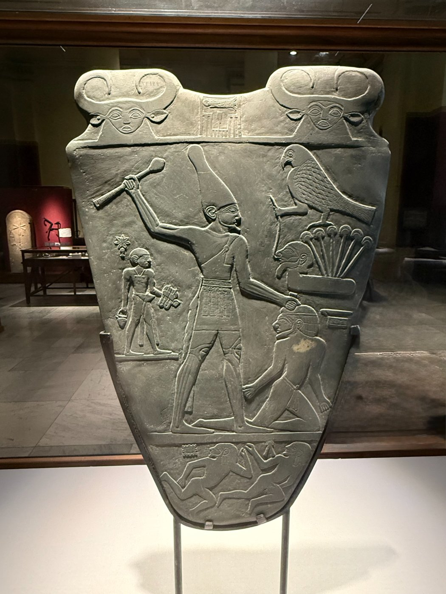
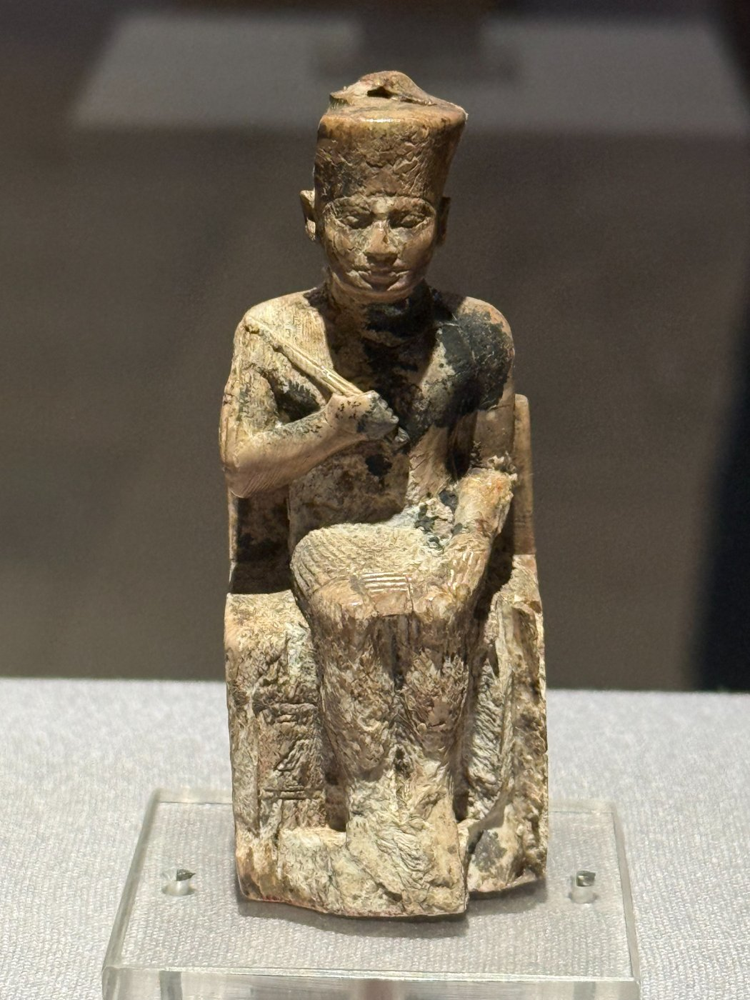
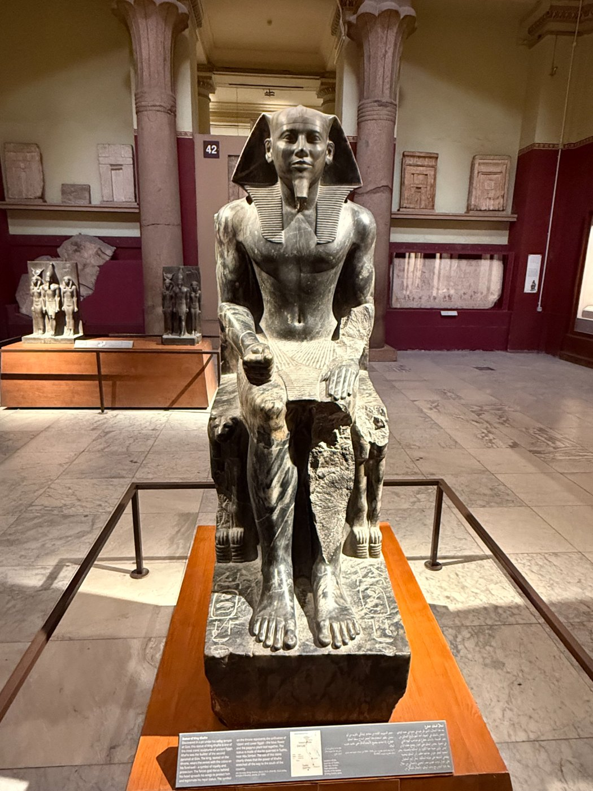
二楼才是最震撼的部分。走廊两侧堆满了木乃伊棺材，密密麻麻，层层叠叠，有的三四具摞在一起，有的靠在墙角。这不是博物馆式的陈列，更像是一个法老时代的"仓库"。在一个安静的角落，找到了Thuya和Yuya的木乃伊——图坦卡蒙的曾祖父母。Yuya是上埃及阿赫米姆的祭司，他的女儿提耶嫁给了阿蒙霍特普三世，生下了阿肯那顿，阿肯那顿则是图坦卡蒙的父亲。看过《古埃及史》书里的插图之后，在这里一一对上了实物——有一种"见到了老朋友"的奇妙感觉。
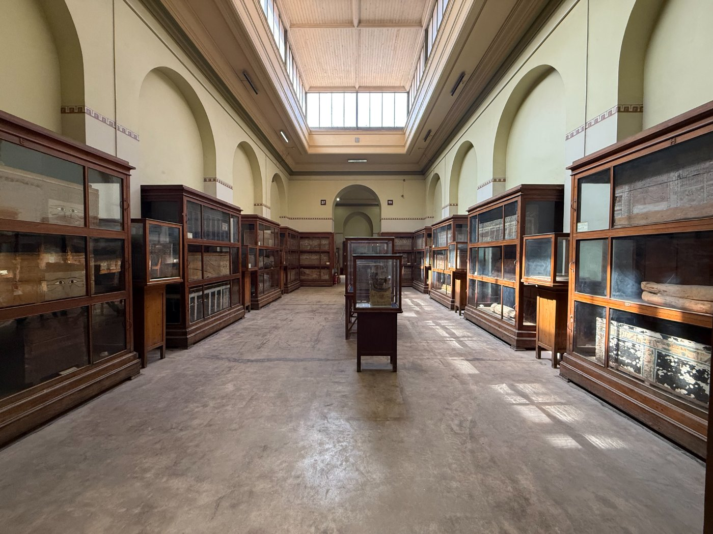
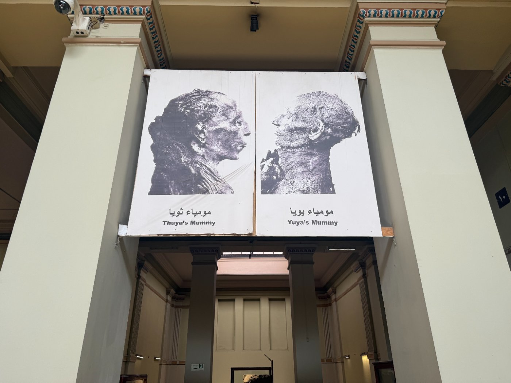
赶到位于开罗市中心的伊斯兰艺术博物馆。号称馆藏十万件，是世界上最重要的伊斯兰艺术收藏之一。镇馆之宝包括天房（Ka'ba）的纯银镶嵌钥匙——伊斯兰教最神圣的建筑的钥匙就静静地躺在展柜里；还有马尔万青铜水壶，以及那些让人目眩神迷的马穆鲁克珐琅彩绘玻璃清真寺灯——灯身上繁复的阿拉伯文书法和几何纹样，在灯光下流光溢彩。
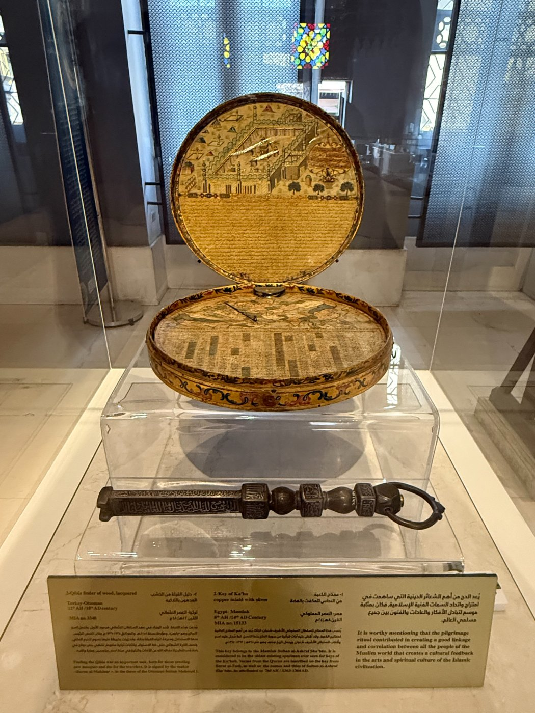
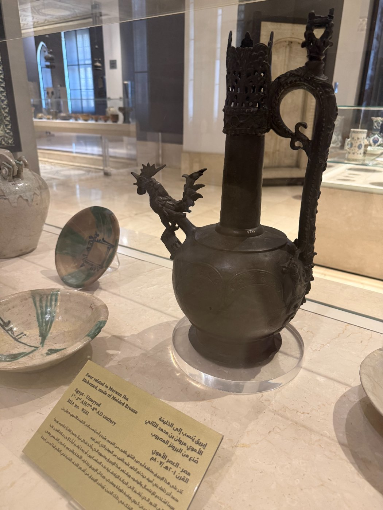
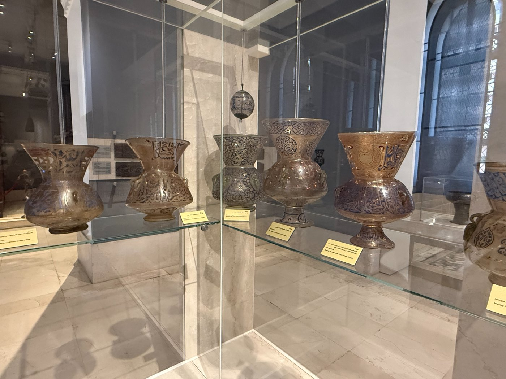
不过说实话有些遗憾——虽然号称馆藏十万件，能参观的25个展厅可能只有吉隆坡伊斯兰艺术博物馆（IAMM）的五分之一大。吉隆坡的IAMM在展陈设计、空间感和互动性上都做得更好。但这里的藏品质量毋庸置疑，尤其是那些来自倭马亚、阿拔斯、法蒂玛、马穆鲁克和奥斯曼各朝代的精品，串起了一部完整的伊斯兰艺术史。
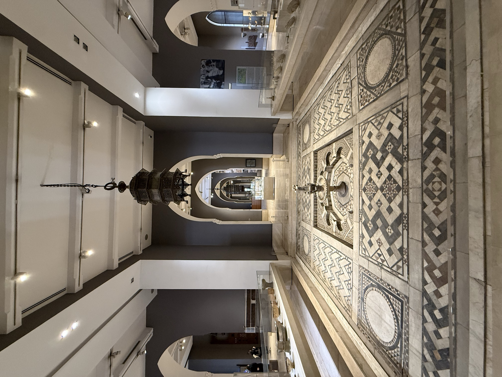
参观完博物馆时间还早，让Gemini帮我规划了一个步行参观路线——不曾想这才是今天行程的高潮。第一站是祖韦伊拉门（Bab Zuweila）——法蒂玛王朝时期修建的开罗古城南门，距今已有九百多年。城门上方的两座宣礼塔其实属于旁边的苏丹穆艾亚德·谢赫清真寺（建于1421年），建筑师把宣礼塔直接架在了古城门的双塔上。
从一个非常小的入口钻进去，沿着昏暗的螺旋楼梯一路爬上宣礼塔。顶上的风景让人屏息——整个开罗老城区铺展在脚下，密密麻麻的清真寺穹顶和宣礼塔从居民楼之间探出来，远处能看到萨拉丁城堡的轮廓。站在九百年前的城门上俯瞰这座城市，有一种强烈的穿越感。
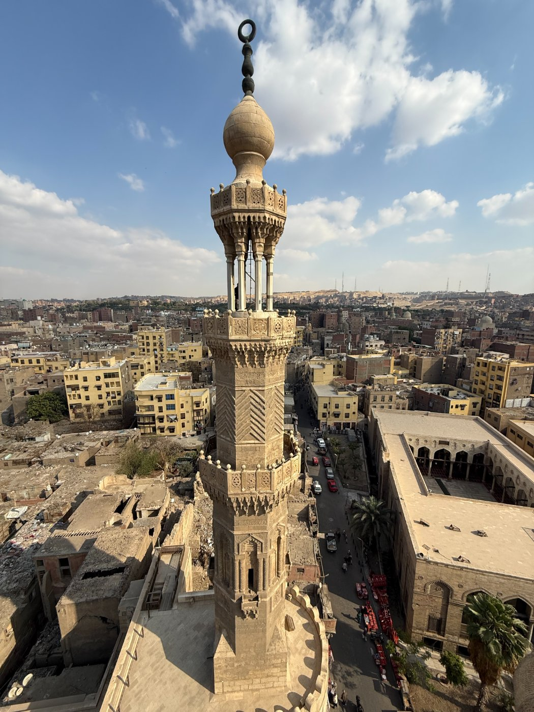
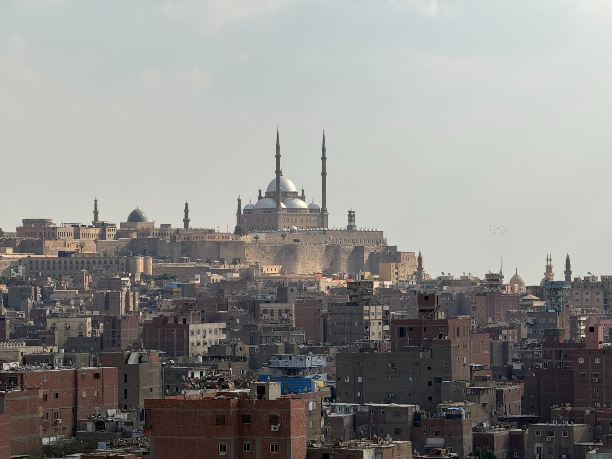
从宣礼塔下来，顺便进了旁边的苏丹穆艾亚德·谢赫清真寺。这是一座马穆鲁克时代的清真寺，和游客扎堆的景点不同，这里几乎没有人。偌大的庭院里只有几个人安静地坐着看书，还有一群鸽子在穹顶下幸福地飞来飞去。阳光从高处的窗棂泻入，在地毯上投下一片片几何图案的光斑。这是一座真正还在使用中的清真寺——不是博物馆，不是景点，而是一个活着的信仰空间。
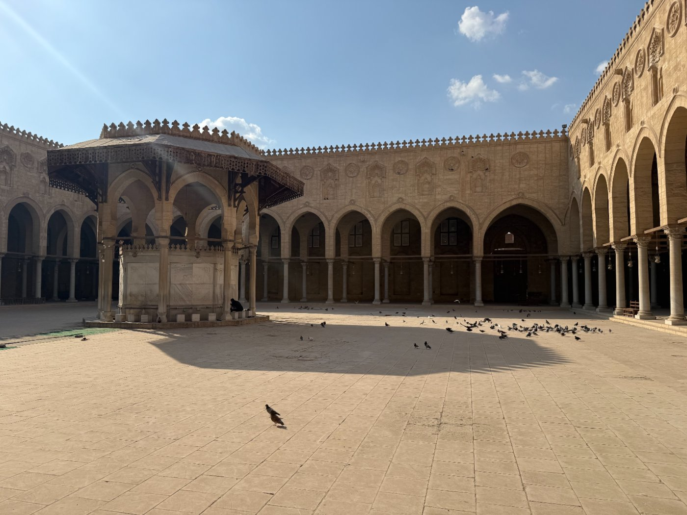
出了清真寺，踏上了穆伊兹街（Al-Muizz Street）。联合国教科文组织称这里是"世界上中世纪伊斯兰建筑最密集的地方"——走在这条不算宽的街道上，两边的马穆鲁克建筑确实让人应接不暇。巨大的石头穹顶、错综复杂的几何星形拼花、精美的木雕窗棂（Mashrabiya）——和上午在伊斯兰艺术博物馆里看到的工艺品一脉相承，只不过这里是实物尺寸。
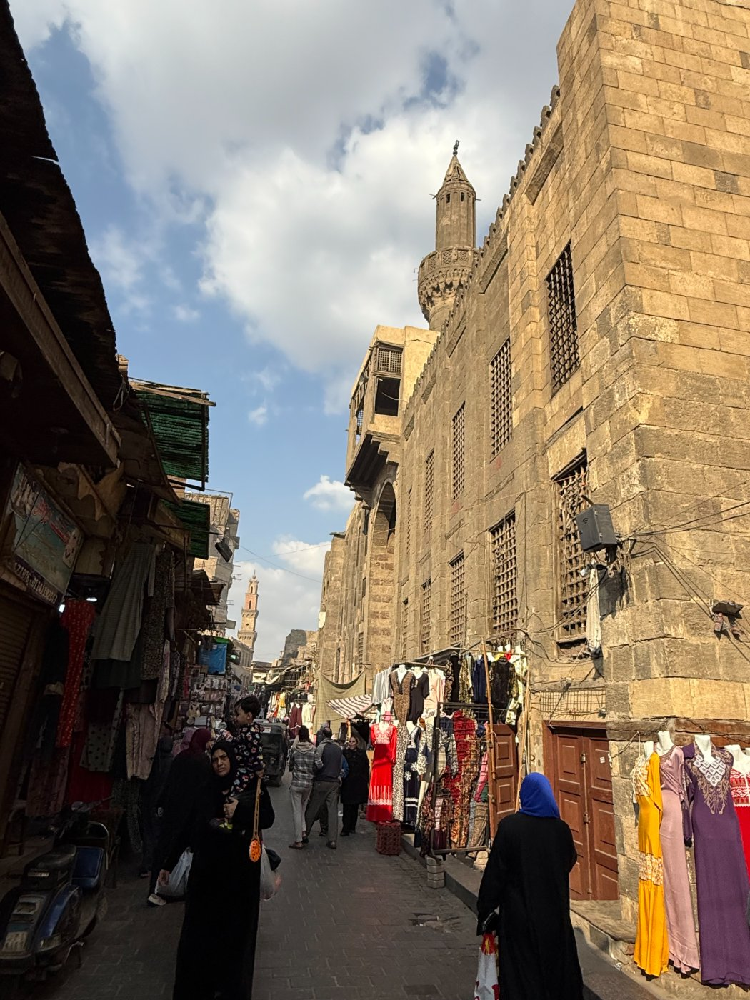
路两边的小店卖着女性内衣、各种茶壶和小商品，时不时有手推车穿过人群。这里不是旅游步行街，而是活着的老城区——居民们就住在这些几百年前的建筑里，在马穆鲁克苏丹的穹顶底下过着日常生活。走过苏丹古里建筑群（Sultan Al-Ghuri Complex）时，停下来仰头看了一会儿——这是马穆鲁克晚期（1504年）的杰作，穹顶上的几何纹样精密得像数学公式。
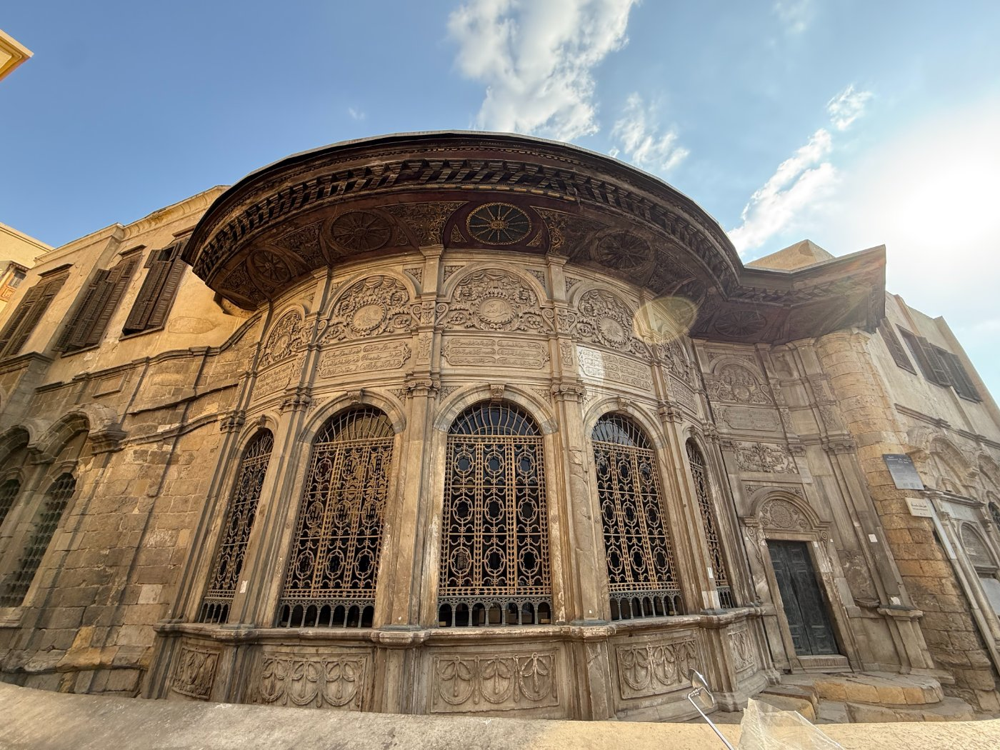
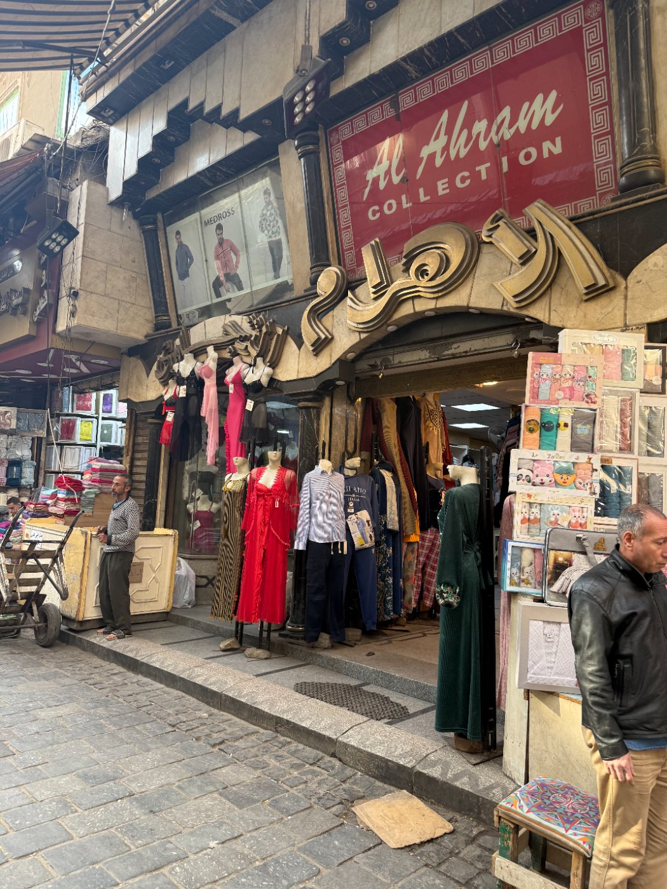
继续沿穆伊兹街北行，到达嘉拉温建筑群（Qalawun Complex）。这是马穆鲁克苏丹嘉拉温在1285年修建的庞大建筑群，集医院（Maristan）、神学院（Madrasa）和苏丹陵墓于一体。但因为正值斋月，所有建筑都已关门。只能站在外面透过铁门往里看——穿过昏暗的门洞，隐约能看到里面高耸的穹顶和精美的石雕。想象着全盛时期的样子：医院免费收治病人，神学院里传出诵经声，苏丹的灵柩安息在最高的穹顶之下。
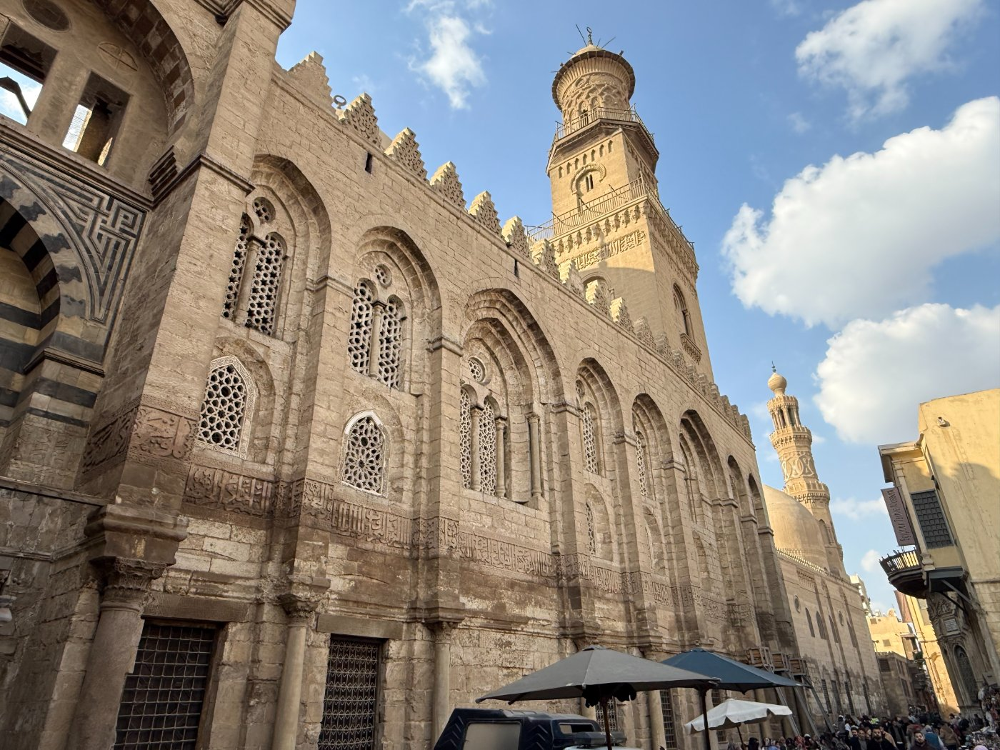
穆伊兹街的尽头绕进了哈利利市场——第二天就来过的地方，但这次感觉完全不同。上次是跟着团队匆匆买了几幅莎草纸画就走，这次是一个人慢慢逛。在市场深处找到了那家叫费沙维（Café El Fishawy）的百年老店。这家咖啡馆从1773年开业至今，两百五十多年来24小时营业不间断。
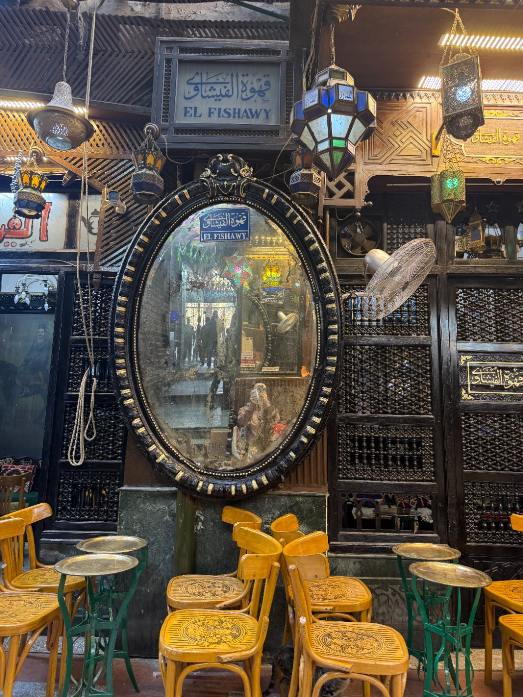
诺贝尔文学奖得主纳吉布·马哈福兹以前就爱坐在这里写作——他的《开罗三部曲》和禁书《我们街区的孩子们》，很多灵感就来自这片老城区的街巷。我找了一张镶着黄铜桌面的小圆桌坐下，点了一杯埃及传统的加糖薄荷红茶（Shai bil Na'na）。茶很甜，薄荷很浓。旁边不断有小孩跑过来说"One dollar"。坐在两百多年的老店里，喝着和马哈福兹可能一样的茶，看着哈利利市场的人来人往——突然觉得这次旅行变得异常完美。
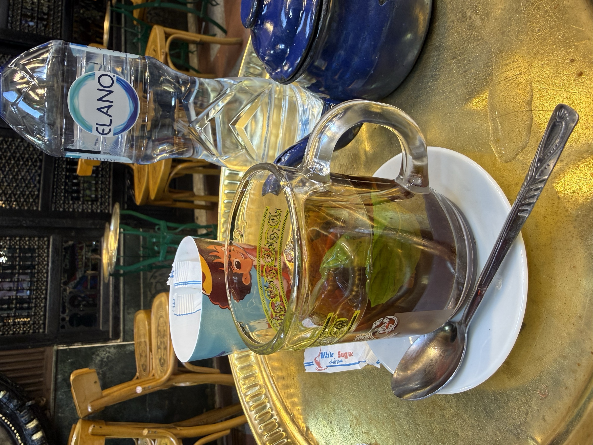
傍晚去和剩下的几位团友汇合。在连锁的Maison Thomas吃了一顿披萨——十天的埃及菜之后，意大利风味的简单碳水竟然有一种"回到文明"的荒谬快感。吃完饭又完成了一堆购物任务，给家人朋友带些纪念品。最后拖着疲惫的身躯回到酒店——开罗的最后一个夜晚。明天就要飞回上海了。
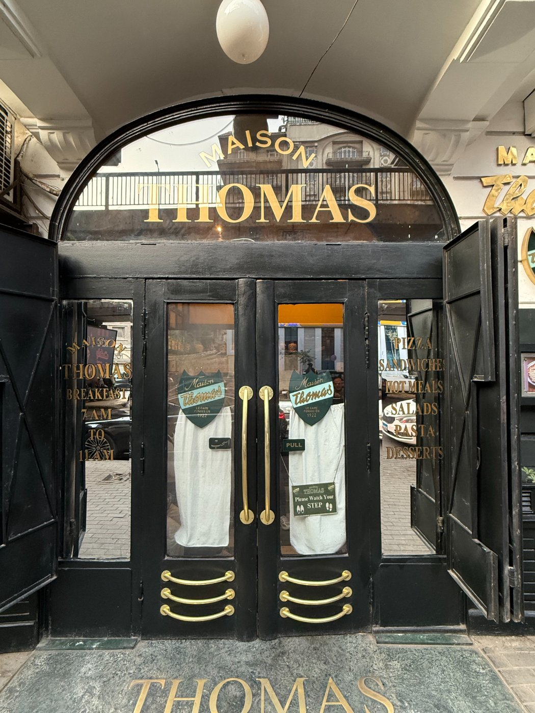